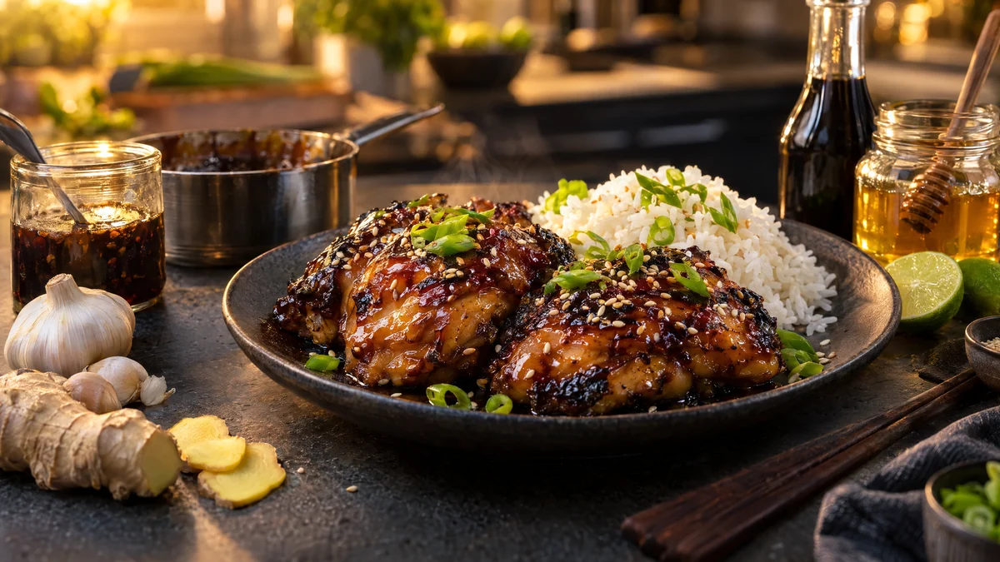

RESTFEST · RECEPTGrundrecept
Allroundmarinad med soja, honung, vitlök och ingefära
Soja, honung, vitlök och ingefära rörs ihop på två minuter till en söt, salt och djupt smakrik marinad som passar kyckling, fläsk, lax, tofu och grönsaker. Den sparade halvan kokas ihop till en blank glasyr som karamelliseras i pannan. Grundreceptet som får en vanlig vardagsmiddag att se ut som från en asiatisk grillrestaurang.
- Förberedelse
- 5 min + marinering
- Tillagning
- 5 min glasyr
- Portioner
- ca 2 dl, till 500–600 g kött, fisk eller tofu
- Nivå
- Nybörjare
 Det här behöver du
Det här behöver du
Tryck på + vid det du behöver köpa.
Gör så här
- Rör ihop alla ingredienser i en skål eller skaka dem i en burk med lock.
- Häll undan hälften av marinaden i en liten kastrull. Den blir glasyren.
- Lägg kött, fisk, tofu eller grönsaker i en fryspåse eller form, häll över resten av marinaden och vänd runt. Marinera i kylen: kyckling och fläsk 1–12 timmar, tofu minst 1 timme, lax högst 30 minuter.
- Torka av överflödig marinad och stek, grilla eller ugnsbaka som vanligt. Häll bort den marinad som har legat med det råa.
- Koka ihop den sparade halvan i 2–3 minuter, tills den är sirapsaktig. Pensla över glasyren de sista minuterna, så att ytan blir blank och karamelliserad.
Användning och tips
- Avsluta med rostade sesamfrön och tunt skivad salladslök, och servera med ris och en krispig sallad.
- Ringla glasyren över stekt ris (recept 31) eller rostade grönsaker.
- Använd aldrig marinad som har legat med rått kött eller fisk som sås utan att koka den först.
- Byt honungen mot sirap för en vegansk marinad till tofu och grönsaker.
- Marinaden håller ca 1 vecka i kylen så länge den inte har varit i kontakt med något rått.
Mått och ugnstemperaturer
Måtten är svenska (dl, msk, tsk, krm). Ugnstemperaturerna gäller vanlig ugn med över- och undervärme; med varmluft, sänk med 20 grader.